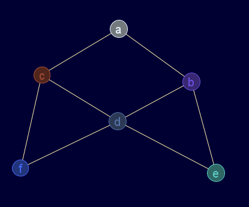
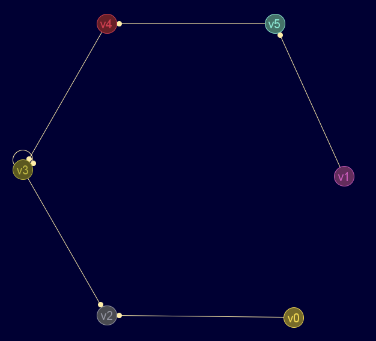
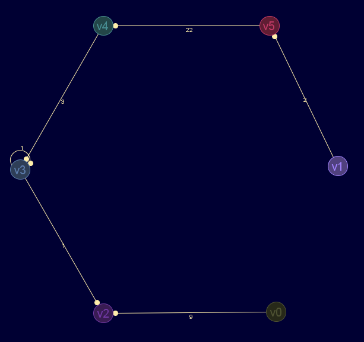

Descripción
Convierte una matriz de adyacencia en una matriz de incidencia.
Para grafos ponderados, los pesos deben ser estrictamente positivos.
Para digrafos, el valor de la matriz de incidencia del extremo de inicio será negativo, y el final positivo.
Cadena de entrada
gr_adyinc
Cadena de salida
GRAFO.adyinc
Uso
gr_adyinc(<mat_ady>,<dirigido>[,<ponderado>])
| Parámetros | |||
|---|---|---|---|
| # | Parámetro | Descripción | Valor por defecto |
| 1 | mat_ady | matriz de adyacencia (debe ser cuadrada y de números reales) | |
| 2 | dirigido | verdadero para digrafo |
|
| 3 | ponderado | verdadero para grafo ponderado (estrictamente positivo) |
falso |
Ejemplos
Grafo en JMEScriptGUI con visor de grafos v0.1:

gr_adyinc([[0,1,1,0,0,0],[1,0,0,1,1,0],[1,0,0,1,0,1],[0,1,1,0,1,1],[0,1,0,1,0,0],[0,0,1,1,0,0]],falso)
VectorEvaluado: | 1 1 0 0 0 0 0 0 | | 1 0 1 1 0 0 0 0 | | 0 1 0 0 1 1 0 0 | | 0 0 1 0 1 0 1 1 | | 0 0 0 1 0 0 1 0 | | 0 0 0 0 0 1 0 1 |
Grafo en JMEScriptGUI con visor de grafos v0.1:

gr_adyinc([[0,0,1,0,0,0],[0,0,0,0,0,1],[0,0,0,0,0,0],[0,0,1,1,0,0],[0,0,0,1,0,0],[0,0,0,0,1,0]],verdadero)
VectorEvaluado: | -1 0 0 0 0 0 | | 0 -1 0 0 0 0 | | 1 0 1 0 0 0 | | 0 0 -1 1 1 0 | | 0 0 0 0 -1 1 | | 0 1 0 0 0 -1 |
Grafo en JMEScriptGUI con visor de grafos v0.1:

gr_adyinc([[inf,inf,9,inf,inf,inf],[inf,inf,inf,inf,inf,2],[inf,inf,inf,inf,inf,inf],[inf,inf,1,1,inf,inf],[inf,inf,inf,3,inf,inf],[inf,inf,inf,inf,22,inf]],verdadero,verdadero)
VectorEvaluado: | -9 0 0 0 0 0 | | 0 -2 0 0 0 0 | | 9 0 1 0 0 0 | | 0 0 -1 1 3 0 | | 0 0 0 0 -3 22 | | 0 2 0 0 0 -22 |
Véase también…
Desde / Última modificación
v0.6.2.0